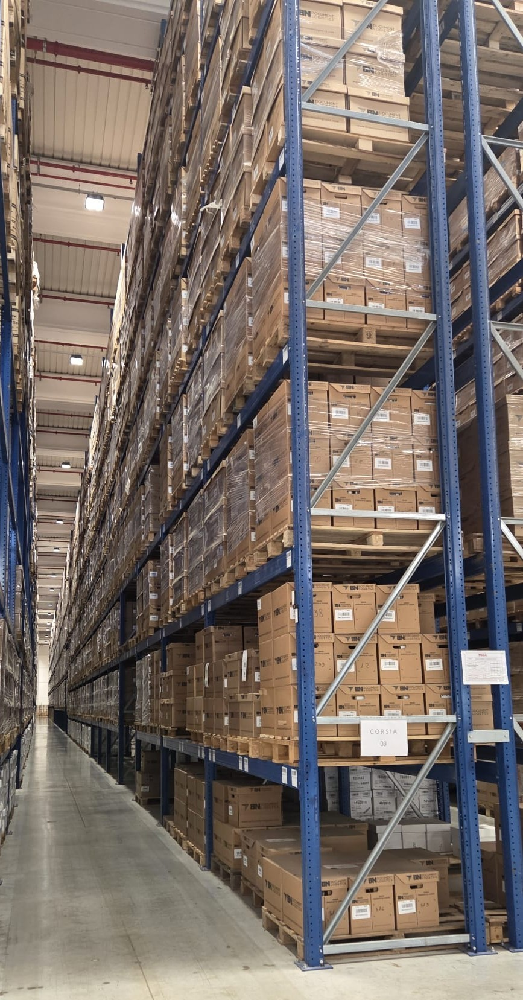
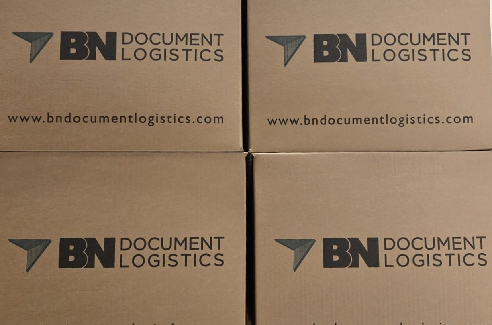

BN Document Logistics
BN Document Logistics
Efficienza, Sicurezza, Innovazione.
Efficiency, Security, Innovation.
La Nostra Storia
La storia di BN Document Logistics nasce da un’intuizione ambiziosa: trasformare la gestione documentale da un onere burocratico a un asset strategico per le imprese. Siamo partiti come specialisti della logistica fisica, maturando una profonda esperienza nella custodia e nella movimentazione sicura del patrimonio cartaceo.
Con l’avvento della rivoluzione digitale, abbiamo scelto di non restare a guardare, evolvendo i nostri processi per rispondere alle nuove sfide del mercato. Questa fusione tra competenza logistica tradizionale e innovazione tecnologica ci permette di offrire soluzioni agili, capaci di rendere i flussi di lavoro più snelli, sicuri e pronti per il futuro.
Our History
The history of BN Document Logistics began with an ambitious vision: to transform document management from a bureaucratic burden into a strategic asset for businesses. We started as specialists in physical logistics, gaining extensive experience in the secure storage and handling of paper-based assets.
With the onset of the digital revolution, we chose to lead the change, evolving our processes to meet new market challenges. This synergy between traditional logistical expertise and technological innovation allows us to provide agile solutions that make workflows leaner, more secure, and future-ready.


La nostra missione?
Attravverso il nostro supporto i nostri clienti possono beneficiare di soluzioni logistiche innovative che garantiscono la sicurezza e l'efficienza nella gestione dei documenti.
Affidati ad un partner affidabile per la tua gestione documentale!
Our mission?
Through our support, our customers can benefit from innovative logistics solutions that guarantee security and efficiency in document management.
Trust a reliable partner for your document management!